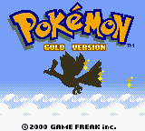
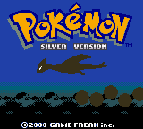
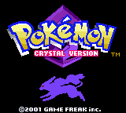
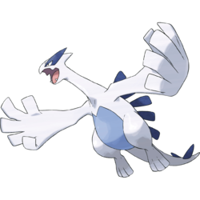
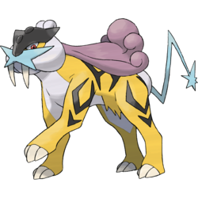
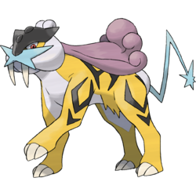

  
Generation 2
Generation 2 is the second series of pokemon games to release by game company Gamefreak. This Generation similar to Generation 1 had three games although Pokemon Crystal released a few months after the first and was maily released to patch a few bugs after the release Generation 2 and to fix a few issues that fans had with the game. Generation 2 had the same three starters across all three titles with Totodile the water type, Cyndaquil the fire type and main character Ethan being the only playable character until female Kris was released in Crystal being the first playable female character in the franchise. Lyra would also be a female playable character in the remakes of Gen 2 in HeartGold and SouldSilver However these games are generally considered an extension of Generation 4 as they came out around the same time. Team Rocket is the main evil team of this generation but instead of being led by Giovanni it is led by a new character called Archer. Generation 2 first released in Japan in 1999 and Internationally in late 2000. Pokemon Crystal would then later release in 2001 Internationally and in 2000 in Japan. Similar to Generation 1 this game was nicknamed Gen 2 by the fanbase and released on the GameBoy Colour and Super Game Boy Nintendo systems.
Gameplay Mechanics
The Second Generation mostly added to the status quo set by the first generation with 100 new pokemon (however several were evolutions and prevolutions of Generation 1 pokemon) and two new pokemon types in Dark and Steel being the most major additions to this generation also added to Generation 1 were
- 86 new moves
- Gendered Pokemon to breed and produce new pokemon that would grow to have better strats
- Colour varients of pokemon called "shinies"
- Seven new types of pokeball
- The ability for pokemon to hold and use items in battle
- New baby pokemon which were prevolution of Gen 1 pokemon
- A friendshit stat which affected accuracy and small in game events
Region
The Johto Region was an all new region debuting in generation 2 and is located directly West of Generation 1's Kanto and is located South of Generation 4 Sinnoh region. Johto is based off of the Kansai Region of Japan and is much more rural than its Gen 1 predecessor with only two cities present across the whole region the rest being villages and small settlements. Once you have defeated the elite four in this game you can catch a boat to the Kanto region and play over the first generation again with all the same gym leaders and cities.
Legendaries
Six new legendary pokemon were released in this Generation; Lugia, Ho'oh, Celebi, Raikou, Entei and Suicine. Raikou, Entei and Suicune made up the three beasts and can be found prowling around the map during the game. Lugia and Ho'oh make up the tower duo, depending on the version you bought you can only catch one of these legendaries before the Elite four. If you bought Pokemon Silver than you can only catch Lugia and vice versa but once you have defeated the Elite four you have the chance to catch the other. Lugia can be caught at the Whirlpool islands and Ho'oh can be caught at Ecruteak city but only if you have a rainbow feather found at Radio Tower. Celebi is not catchable in this game but is mentioned as the protector of the forest by an elderly man in a small rural village.


 
